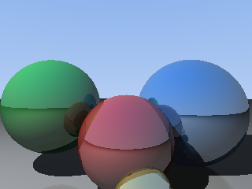

2026-08-21 · a gleam-zig field note
A ray tracer in Gleam, but 18× faster.
Same 200 lines of pure standard-library Gleam. Same image, byte for byte. 18× is against the BEAM — where Gleam programs actually live; against V8 it's 1.5×, in a tenth of the memory. The only thing that changed is the machine underneath.

Three separate renders, one from each target. Spot the difference — you can't: all three PPMs hash to 7a452dda1311ec87af42a1e22ba1367c.
Gleam programs live on the BEAM. This one — spheres, a floor, hard shadows, reflections, PPM to stdout — renders there in 1.48 s. Compile the identical source with the gleam-zig fork instead and you get a 399 KB static binary that renders the identical image in 0.08 s:
The memory column is arguably the ruder comparison: the native render peaks at 6 MB against the BEAM's 104 MB and node's 65 MB — 17× and 10× less — and the thing you ship is a 399 KB file, not a runtime the target machine has to have installed.
And since this week the whole thing is one command on one file — no project, no manifest:
# one gleam file in, one native binary out gleam export zig-executable raytracer.gleam --out rt ./rt > image.ppm # or one portable source file anyone can run with just a zig toolchain gleam export zig-source raytracer.gleam --out rt.zig
The code, both sides of the compile: raytracer.gleam — the 200-line source — and raytracer-single.zig, the entire emitted program (modules, runtime, entrypoint) as the one file zig-source produces. Read what the compiler actually wrote.
Where the 18× came from
Not from one trick. The compiler emits readable Zig with compile-time reference counting instead of a GC, and the number fell over three days of measured steps, each one gated on a 124-program corpus that byte-diffs against the official compiler under a leak checker:
Unboxed scalars, functions that borrow instead of counting, vectors whose matched cells are rewritten in place, records that keep their fields inline — and one genuine embarrassment: a third of the runtime turned out to be 230,000 mmap calls from a scratch allocator, misdiagnosed for a day as "output writes". The benchmark dossiers open every one of these up, losses included: allocation churn still goes to the BEAM's JIT by 1.3× on one microbenchmark, and integers here are i64, not bignums.
Why "byte for byte" is the interesting part
The speed claim is only worth something because the correctness claim is checked first. Every run of this program on erlang, javascript, and zig produces a PPM with md5 7a452dda1311ec87af42a1e22ba1367c, and every zig binary in the test corpus counts its allocations and fails if one is still live at exit. Fast came second.